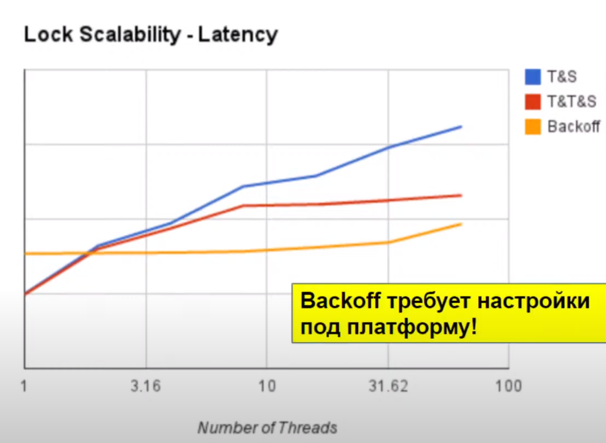

Лекция 10. Железо и спинлоки
У ядер есть кеш. Это проблема, ибо если одно ядро записало в свой кеш, а другое ядро прочитало старое закешированное значение, то мы проиграли. У современных процессоров кеш когерентен, поэтому таких проблем нет. Это реализовано через протокол когерентности, одним из таких является MESI (в реальных процессорах чуть сложнее).
У каждого кешлайна в кеше есть статус:
- Modified
- Exclusive
- Shared
- Invalid
Изначально статус I, при получении данных из памяти получается E (только в одном кеше). Если другое ядро читает E-кешлайн первого ядра, то на запрос отвечает кеш первого ядра и в обоих кешах эта линия становится S. При изменении значения статус становится M, а в остальных кешах линия инвалидируется.
Если состояние IM, то первое ядро прочитает из кеша второго и опять станет SS. В память мы пишем при flush из кеша.
Простейший Test-And-Set lock:
class TASLock:
boolean locked
def lock():
# сбрасывает все кеши, т.к. требует Exclusive и забивает шину
while locked.getAndSet(true):
pass
def unlock():
locked = false
Применим double-checked locking - добавим while locked: pass. Таким образом, ожидание не создает трафик. Но в момент unlock все ядра пытаются захватить лок и опять кушают ресурсы. Добавим задержку (backoff) в цикл в lock. Тогда не все будут ломиться одновремнно и пока задержка пройдет, возможно другой поток уже возьмет лок, тогда мы не будем пытаться его брать.

CLH Lock
Этот лок first-come first-served.
# padнуто до размера кешлинии
class QNode:
boolean locked # shared, atomic
class CLHLock:
tail = QNode() # shared, atomic
threadlocal my = QNode()
def lock():
my.locked = True
pred = tail.getAndSet(my)
while pred.locked: pass
def unlock():
my.locked = False
my = pred
Получается неявная очередь, где каждый ждет предыдущий поток. Теперь при unlock только один поток побежит в шину.
В NUMA системах это не очень хорошо работает, потому что мы ждём на памяти предыдущего процессора.
MCS
Тоже FCFS, но ждёт на своей памяти. В ноду добавляем указатель на следующую вершину.
class CLHLock:
tail = QNode() # shared, atomic
threadlocal my = null
def lock():
my = QNode() # alloc in my memory!
my.locked = True
pred = tail.getAndSet(my)
if pred != null:
pred.next = my
while my.locked: pass
def unlock():
if my.next == null:
if tail.CAS(my, null): # мы хвост, действительно никого больше нет
return
else: # мы не хвост, просто кто-то не успел выставить
while my.next == null: # ждем пока не проставят
pass
my.next.locked = False
И у MCS и у CHL есть одна проблема: tail меняется всеми потоками и это большая конкуренция. Она неисправима, если мы хотим FCFS lock, то нам нужно синхронизироваться насчет порядка. При очень большом числе ядер это слишком проблематично, проще отказаться от FCFS.
Lock cohorting
Ядра на одном узле (с общей памятью) делят свой обычный лок. Есть также глобальный лок, который мы ждем после локального. В глобальный лок стучится максимум столько потоков, сколько и узлов, а их обычно немного.
- Глобальный лок: Thread-Oblivious
- Его брать и освобождать могут любые потоки
- Пример: Backoff
- Локальный лок: Cohort Detection
- Должен уметь понимать, есть ли другие локи, которые его ждут.
- Пример: MCS